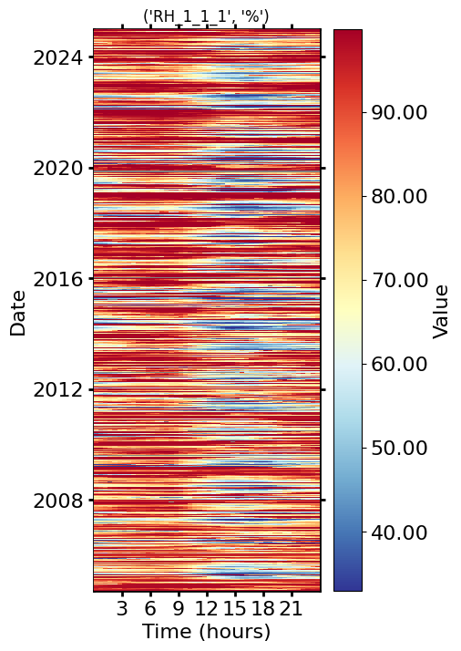
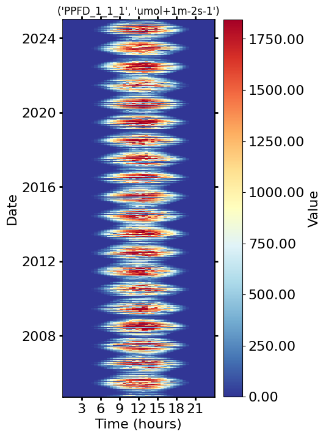
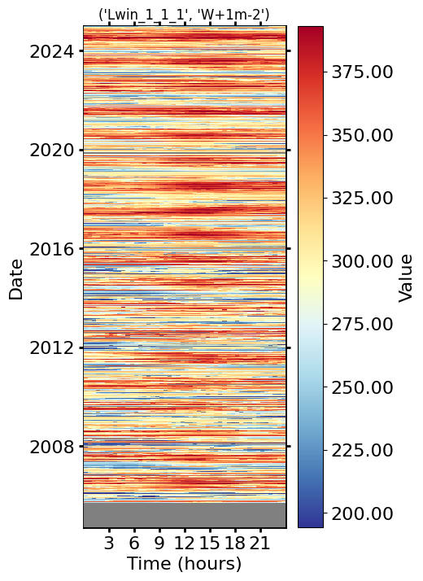
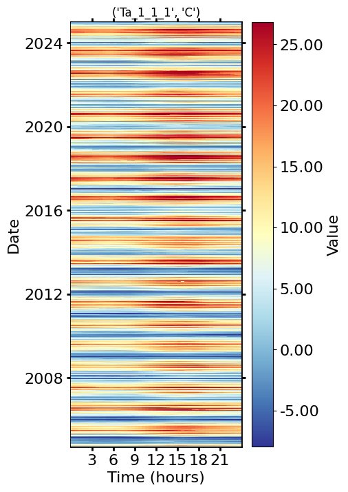
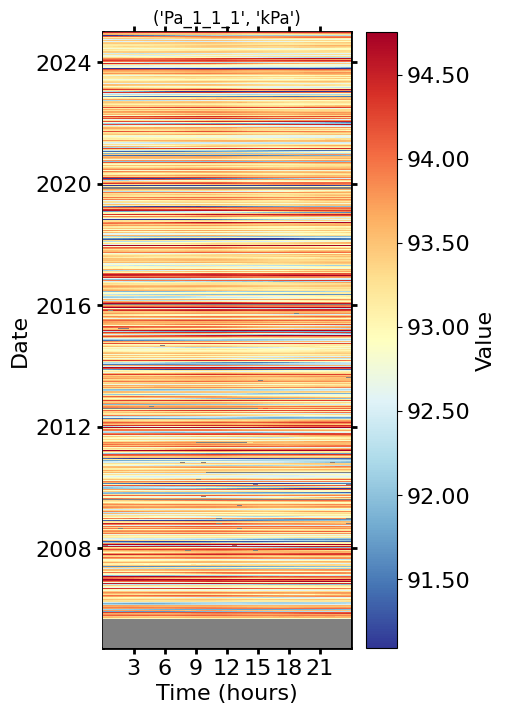

Notebook version: 1 (24 Feb 2025)
Author: Lukas Hörtnagl (holukas@ethz.ch)
Background#
Formats meteo data to be used in EddyPro flux processing
More info:
Settings#
Variables#
# Name of the variables in the original data file
SW_IN = 'SW_IN_T1_47_1_gfXG'
RH = 'RH_T1_47_1'
PPFD_IN = 'PPFD_IN_T1_47_1_gfXG'
LW_IN = 'LW_IN_T1_47_1'
TA = 'TA_T1_47_1_gfXG'
PA = 'PA_T1_47_1'
# Rename original variables for EddyPro, and add units
rename_dict = {
TA: ('Ta_1_1_1', 'C'),
SW_IN: ('Rg_1_1_1', 'W+1m-2'),
RH: ('RH_1_1_1', '%'),
LW_IN: ('Lwin_1_1_1', 'W+1m-2'),
PA: ('Pa_1_1_1', 'kPa'),
PPFD_IN: ('PPFD_1_1_1', 'umol+1m-2s-1'),
}
Imports#
import importlib.metadata
import warnings
from datetime import datetime
import matplotlib.gridspec as gridspec
import matplotlib.pyplot as plt
import numpy as np
from dbc_influxdb import dbcInflux
from diive.core.plotting.heatmap_datetime import HeatmapDateTime # For plotting heatmaps
from diive.core.plotting.timeseries import TimeSeries # For simple (interactive) time series plotting
from diive.pkgs.formats.meteo import FormatMeteoForEddyProFluxProcessing # Class to format output files for upload
from diive.core.io.files import load_parquet, save_parquet
warnings.filterwarnings(action='ignore', category=FutureWarning)
warnings.filterwarnings(action='ignore', category=UserWarning)
version_diive = importlib.metadata.version("diive")
print(f"diive version: v{version_diive}")
diive version: v0.87.0
Docstring#
# help(FormatMeteoForEddyProProcessing)
Load data#
SOURCEFILE = r"../10_METEO/12.5_METEO7_GAPFILLED_2004-2024.parquet"
df = load_parquet(filepath=SOURCEFILE)
keepcols = ['SW_IN_T1_47_1_gfXG', 'RH_T1_47_1', 'PPFD_IN_T1_47_1_gfXG', 'LW_IN_T1_47_1', 'TA_T1_47_1_gfXG', 'PA_T1_47_1']
df = df[keepcols].copy()
Loaded .parquet file ../10_METEO/12.5_METEO7_GAPFILLED_2004-2024.parquet (0.027 seconds).
--> Detected time resolution of <30 * Minutes> / 30min
The dataframe with original data looks like this:
df
| SW_IN_T1_47_1_gfXG | RH_T1_47_1 | PPFD_IN_T1_47_1_gfXG | LW_IN_T1_47_1 | TA_T1_47_1_gfXG | PA_T1_47_1 | |
|---|---|---|---|---|---|---|
| TIMESTAMP_MIDDLE | ||||||
| 2004-09-20 10:45:00 | 602.874084 | 80.503701 | 1070.543364 | NaN | 13.300000 | NaN |
| 2004-09-20 11:15:00 | 703.762207 | 77.503701 | 881.543364 | NaN | 13.390000 | NaN |
| 2004-09-20 11:45:00 | 537.947327 | 75.803704 | 1022.543364 | NaN | 13.810000 | NaN |
| 2004-09-20 12:15:00 | 634.747437 | 71.503701 | 1284.543364 | NaN | 14.470000 | NaN |
| 2004-09-20 12:45:00 | 634.747437 | 72.703705 | 742.543364 | NaN | 13.980000 | NaN |
| ... | ... | ... | ... | ... | ... | ... |
| 2024-12-31 21:45:00 | 0.000000 | 87.254008 | 0.000000 | 232.595527 | -0.504794 | 94.211806 |
| 2024-12-31 22:15:00 | 0.000000 | 87.430236 | 0.000000 | 232.609777 | -0.296828 | 94.189013 |
| 2024-12-31 22:45:00 | 0.000000 | 89.787920 | 0.000000 | 232.345020 | -0.392922 | 94.169525 |
| 2024-12-31 23:15:00 | 0.000000 | 81.809355 | 0.000000 | 234.211100 | 0.792661 | 94.168413 |
| 2024-12-31 23:45:00 | 0.000000 | 88.311314 | 0.000000 | 231.760533 | -0.422600 | 94.170793 |
355563 rows × 6 columns
Apply formatting#
f = FormatMeteoForEddyProFluxProcessing(
df=df,
cols=rename_dict
)
f.run()
Sanitizing timestamp ...
>>> Validating timestamp naming of timestamp column TIMESTAMP_MIDDLE ... Timestamp name OK.
>>> Converting timestamp TIMESTAMP_MIDDLE to datetime ... OK
>>> All rows have timestamp TIMESTAMP_MIDDLE, no rows removed.
>>> Sorting timestamp TIMESTAMP_MIDDLE ascending ...
>>> Removing data records with duplicate indexes ... OK (no duplicates found in timestamp index)
>>> Creating continuous <30 * Minutes> timestamp index for timestamp TIMESTAMP_MIDDLE between 2004-09-20 10:45:00 and 2024-12-31 23:45:00 ...
Splitting timestamp into two separate columns ('TIMESTAMP_1', 'yyyy-mm-dd') and ('TIMESTAMP_2', 'HH:MM')
Filling missing values with -9999 ...
Renaming columns ...
res = f.get_results()
res
| TIMESTAMP_1 | TIMESTAMP_2 | Rg_1_1_1 | RH_1_1_1 | PPFD_1_1_1 | Lwin_1_1_1 | Ta_1_1_1 | Pa_1_1_1 | |
|---|---|---|---|---|---|---|---|---|
| yyyy-mm-dd | HH:MM | W+1m-2 | % | umol+1m-2s-1 | W+1m-2 | C | kPa | |
| TIMESTAMP_MIDDLE | ||||||||
| 2004-09-20 10:45:00 | 2004-09-20 | 10:45 | 602.874084 | 80.503701 | 1070.543364 | -9999.000000 | 13.300000 | -9999.000000 |
| 2004-09-20 11:15:00 | 2004-09-20 | 11:15 | 703.762207 | 77.503701 | 881.543364 | -9999.000000 | 13.390000 | -9999.000000 |
| 2004-09-20 11:45:00 | 2004-09-20 | 11:45 | 537.947327 | 75.803704 | 1022.543364 | -9999.000000 | 13.810000 | -9999.000000 |
| 2004-09-20 12:15:00 | 2004-09-20 | 12:15 | 634.747437 | 71.503701 | 1284.543364 | -9999.000000 | 14.470000 | -9999.000000 |
| 2004-09-20 12:45:00 | 2004-09-20 | 12:45 | 634.747437 | 72.703705 | 742.543364 | -9999.000000 | 13.980000 | -9999.000000 |
| ... | ... | ... | ... | ... | ... | ... | ... | ... |
| 2024-12-31 21:45:00 | 2024-12-31 | 21:45 | 0.000000 | 87.254008 | 0.000000 | 232.595527 | -0.504794 | 94.211806 |
| 2024-12-31 22:15:00 | 2024-12-31 | 22:15 | 0.000000 | 87.430236 | 0.000000 | 232.609777 | -0.296828 | 94.189013 |
| 2024-12-31 22:45:00 | 2024-12-31 | 22:45 | 0.000000 | 89.787920 | 0.000000 | 232.345020 | -0.392922 | 94.169525 |
| 2024-12-31 23:15:00 | 2024-12-31 | 23:15 | 0.000000 | 81.809355 | 0.000000 | 234.211100 | 0.792661 | 94.168413 |
| 2024-12-31 23:45:00 | 2024-12-31 | 23:45 | 0.000000 | 88.311314 | 0.000000 | 231.760533 | -0.422600 | 94.170793 |
355563 rows × 8 columns
Plot all variables#
plotcols = [plotcol for plotcol in res.columns if not "TIMESTAMP" in plotcol[0]]
plotdf = res[plotcols].copy()
for col in plotdf.columns:
series = plotdf[col].copy()
series.replace(to_replace=-9999, value=np.nan, inplace=True)
try:
fig = plt.figure(facecolor='white', figsize=(4, 8))
gs = gridspec.GridSpec(1, 1) # rows, cols
ax = fig.add_subplot(gs[0, 0])
vmin = series.quantile(.01)
vmax = series.quantile(.99)
HeatmapDateTime(ax=ax, series=series, vmin=vmin, vmax=vmax).plot()
ax.set_title(col, color='black')
fig.show()
except TypeError:
pass





Save to CSV#
res.to_csv("CH-LAE_2004-2024_meteo_aux.csv", index=False)
End of notebook#
dt_string = datetime.now().strftime("%Y-%m-%d %H:%M:%S")
print(f"Finished {dt_string}")
Finished 2025-06-13 17:29:48